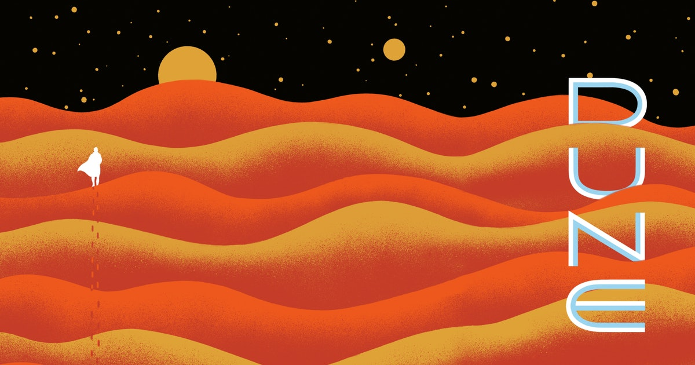
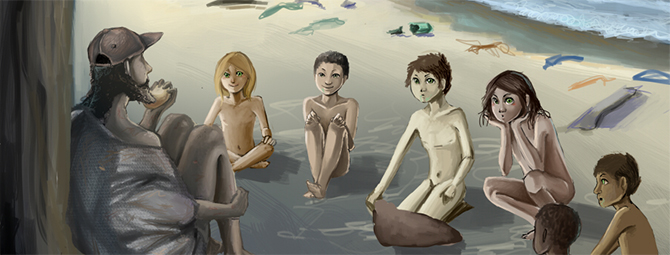

A book we didn't like to much at the time but we keep coming back and referencing when reading others
"Hotwired to the leading edges of art and technology, Neuromancer is a cyberpunk,
science fiction masterpiece—a classic that ranks with 1984 and Brave New World as
one of the twentieth century’s most potent visions of the future."
You can find more about Neuromancer on it's Goodreads
Dune
This is one of the greatest series in Scifi. However this desert story was quite dry.

"Set on the desert planet Arrakis, Dune is the story of the boy Paul Atreides,
heir to a noble family tasked with ruling an inhospitable world where the only
thing of value is the “spice” melange, a drug capable of extending life and enhancing
consciousness. Coveted across the known universe, melange is a prize worth killing for..."
Imagine if we sent all the criminals to the moon, then they revolted against the earth. We love this 10/10
"It is a tale of revolution, of the rebellion of a former penal colony on the Moon
against its masters on the Earth. It is a tale of a culture whose family structures
are based on the presence of two men for every woman, leading to novel forms of marriage
and family. It is the story of the disparate people, a computer technician, a vigorous
young female agitator, and an elderly academic who become the movement's leaders, and of
Mike, the supercomputer whose sentience is known only to the revolt's inner circle, who
for reasons of his own is committed to the revolution's ultimate success."
You can find more about The Moon is a Harsh Mistress on it's
Goodreads
Oryx and Crake
This book is a bizzare post apocaliptic that we still crack jokes about.

"Oryx and Crake is at once an unforgettable love story and a compelling vision of the future.
Snowman, known as Jimmy before mankind was overwhelmed by a plague, is struggling to
survive in a world where he may be the last human, and mourning the loss of his best friend,
Crake, and the beautiful and elusive Oryx whom they both loved. In search of answers, Snowman
embarks on a journey–with the help of the green-eyed Children of Crake–through the lush wilderness
that was so recently a great city, until powerful corporations took mankind on an uncontrolled
genetic engineering ride. Margaret Atwood projects us into a near future that is both all too
familiar and beyond our imagining."
You can find more about Oryx and Crake on it's
Goodreads
The Devotion of Suspect X
Keigo Higashino is a Genius of the genre. We've read 2 of his books and looking for more.
"Yasuko lives a quiet life, working in a Tokyo bento shop, a good mother to her only child.
But when her ex-husband appears at her door without warning one day, her comfortable world is shattered."
You can find more about Oryx and Crake on it's
Goodreads
Below are my ratings of the books we have read.
Note that I am easily entertained.
I will grade on the scale that a book with a 1 should be burned.
A 3 is subpar and didn't enjoy.
A 5 is an average book with nothing wrong with it.
A 7 would be recommended to a friend.
A 10 should not be in ever classroom.
Name
Personal Ratinig
Neuromancer - William Gibson
7
Legion - Brandon Sanderson
8
The Moon is a Harsh Mistress - Robert A. Heinlein
10
Nick of Time - Ted Bell
6
Children of TIme - Adrian Tchaikovsky
9
Dune - Frank Herbert, 1/8 in the Dune series
6
Oryx and Crake - Margaret Atwood
7
Blindsight - Peter Watts
7
Sapiens: A Brief History of Humankind - Yuval Noah Harari